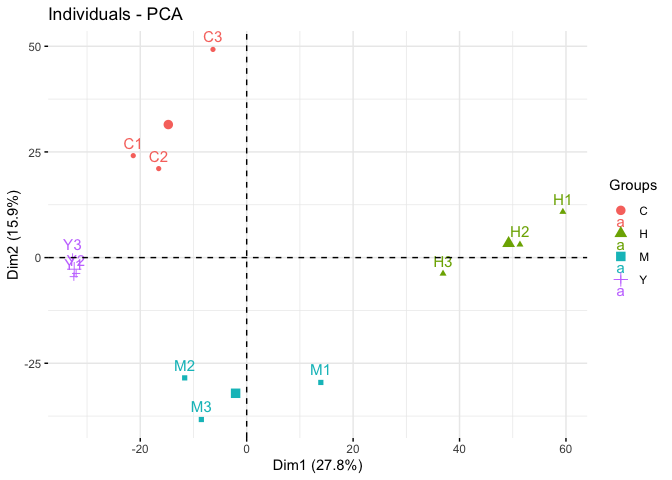

The goal of glyvis is to visualize everything in the glycoverse ecosystem. Visualization is an essential part of data analysis. Human beings are more sensitive to visual information than text and numbers. Plotting helps us to understand the data better. glyvis provides a unified interface for visualizing glycoverse data, including statistical results, experiments, glycan biosynthesis pathways, and more. It implements the autoplot() method for various glycoverse data structures. Just autoplot() it!
Installation
You can install the latest release of glyvis from GitHub with:
# install.packages("remotes")
remotes::install_github("glycoverse/glyvis@*release")Or install the development version:
remotes::install_github("glycoverse/glyvis")Documentation
- 📚 Reference: Here
Role in glycoverse
The main purpose of glyvis is to provide visualization for glystats results. It implements autoplot() methods for each result class in glystats, so that the users can visualize the results directly to get a quick overview. It also provides some other visualization functions for glycoverse data structures, such as glyexp::experiment(), glyrepr::glycan_structure(), and others. This package is not intended to produce publication-quality figures, but to provide a quick exploration of the data.
Example
library(glyexp)
library(glyclean)
#>
#> Attaching package: 'glyclean'
#> The following object is masked from 'package:stats':
#>
#> aggregate
library(glystats)
library(glyvis)
exp <- auto_clean(real_experiment)
#> ℹ Normalizing data (Median)
#> ✔ Normalizing data (Median) [79ms]
#>
#> ℹ Removing variables with >50% missing values
#> ✔ Removing variables with >50% missing values [10ms]
#>
#> ℹ Imputing missing values
#> ℹ Sample size <= 30, using sample minimum imputation
#> ℹ Imputing missing values✔ Imputing missing values [11ms]
#>
#> ℹ Aggregating data
#> ✔ Aggregating data [376ms]
#>
#> ℹ Normalizing data again
#> ✔ Normalizing data again [8ms]
pca_res <- gly_pca(exp)
autoplot(pca_res)